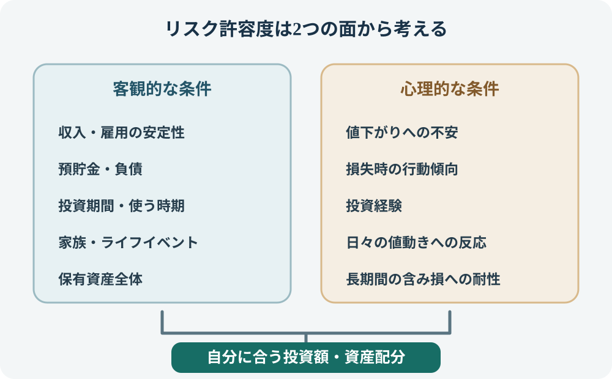
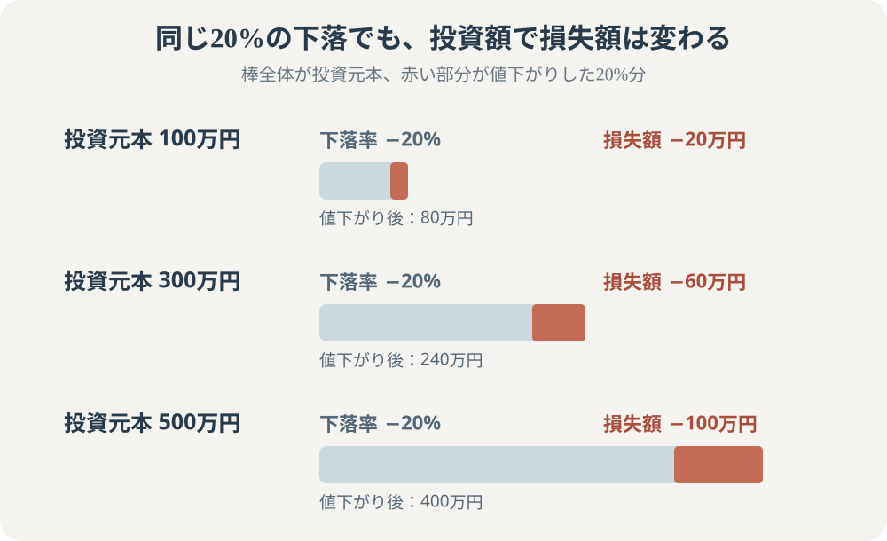

カテゴリツリーを開く
カテゴリツリーを開く
リスク許容度とは？自分に合う投資リスクの考え方と判断方法
「値下がりしても長く持てば大丈夫」と思っていても、実際に資産が大きく減ると不安になり、売却したくなるかもしれません。自分に合う投資を考えるには、どれだけ損失を受け入れられるかを、家計などの客観的な条件と、値下がりに対する心理面の両方から確認することが大切です。

1. リスク許容度とは、どの程度の値下がりを受け入れられるか
リスク許容度とは、投資によって生じる価格変動や損失を、どの程度まで受け入れられるかという考え方です。運用上のリスクは、単に「危険」という意味ではなく、リターンの振れ幅や不確実性を指します。
同じ商品に同じ金額を投資しても、収入・資産・家族構成・投資期間・経験・性格が違えば、受け止め方は変わります。ある人には無理のない値動きでも、別の人には生活や精神面に大きな負担になることがあります。
また、リスク許容度と「リスクを取る能力」は同じではありません。家計上は損失に耐えられる余力があっても、値下がりが気になって眠れないなら、心理的にはそのリスクを受け入れにくい状態です。反対に、大きな値下がりを気にしない性格でも、近く使うお金しかないなら、家計上は大きなリスクを取れません。
2. まず家計・生活の条件から確認する
最初に確認するのは、投資が不調でも生活を維持できるかという客観的な条件です。次の項目を一つずつ確認しましょう。
| 確認する条件 | 見るポイント | リスクを抑える必要が高まる例 |
|---|---|---|
| 収入と雇用 | 収入の安定性、休職・失業時の備え | 収入の変動が大きい、休職・失業時の備えが乏しい |
| 預貯金・負債 | 生活防衛資金、借入金、返済負担 | 手元資金が少ない、返済負担が大きい |
| 投資期間 | 投資資金を使う予定までの年数 | 数年以内に住宅・教育・車などの支出がある |
| 家族・ライフイベント | 教育、住宅、介護、転職、独立など | 大きな支出や収入変化が近づいている |
| 資産全体 | 預貯金・投資資産・年金などのバランス | 金融資産の大部分を投資に回す必要がある |
年齢は考える材料の一つですが、年齢だけでリスク許容度を決めることはできません。若くても近い将来に大きな支出がある人もいれば、年齢を重ねていても十分な資産と安定した収入がある人もいます。
3. 値下がりしたときの気持ち・経験も確認する
家計上の余力があっても、評価額が下がるたびに不安になり、仕事や日常生活に集中できなくなるなら、心理的な負担が大きすぎる可能性があります。
- 評価額が毎日変わることを、どの程度気にするか。
- 含み損が出たとき、生活に影響がなくても売りたくなるか。
- 過去に値下がりを経験したとき、どのように行動したか。
- 周囲の人の利益や相場ニュースを見て、投資方針を変えやすいか。
- 損失が出た状態が数か月、あるいは数年続く可能性を受け止められるか。
投資経験が少ない場合、自分がどの程度の値下がりに耐えられるかを正確に予想するのは難しいものです。最初は少額で値動きを経験し、自分の反応を確認する方法もあります。投資額を増やすことを急ぐ必要はありません。
4. 値下がり額を円で試算してみる
「20%の下落なら耐えられる」と割合だけで考えるより、自分の投資額に置き換えると負担を想像しやすくなります。たとえば、投資評価額が一時的に20%下がった場合は次のようになります。

| 投資評価額 | 20%下落した場合の損失額 | 下落後の評価額 |
|---|---|---|
| 100万円 | 20万円 | 80万円 |
| 300万円 | 60万円 | 240万円 |
| 500万円 | 100万円 | 400万円 |
ここで考えたいのは、損失額を見ても生活費や予定している支出に影響がないか、値下がりした状態が続いても売却せずにいられるか、という2点です。100万円の20%と500万円の20%は同じ下落率でも、家計に与える影響は違います。
さらに、下落した後に元の評価額へ戻るために必要な上昇率も確認しておきましょう。20%下落した場合、80万円から100万円に戻るには25%の上昇が必要です。下落率と回復に必要な上昇率は同じではありません。
5. 過去のドローダウンから下落幅を考える
仮に20%下落した場合だけでなく、過去の株式市場で実際にどの程度の下落が起きたかを見ると、想定する損失額の幅を考える参考になります。たとえば、世界の先進国・新興国の株式を幅広く含むMSCI ACWI指数について、MSCIが公表する最大ドローダウンは58.38%で、発生期間は2007年10月31日から2009年3月9日です。MSCIの指数リスク・リターン特性表に掲載された値で、月次NETRリターンデータに基づき、データ基準日は2026年9月30日です。世界株式に広く分散した指数でも、この危機では高値から半分を超える下落を経験したことが分かります。
この下落率を投資額に当てはめると、損失額の大きさを具体的にイメージできます。次の表は、投資開始時点の評価額から58.38%下落したと仮定した単純計算です。
| 投資評価額 | 58.38%下落した場合の損失額 | 下落後の評価額 |
|---|---|---|
| 100万円 | 約58.4万円 | 約41.6万円 |
| 300万円 | 約175.1万円 | 約124.9万円 |
| 500万円 | 約291.9万円 | 約208.1万円 |
ただし、これは過去の特定指数・特定期間の実績です。すべての全世界株式ファンドが同じ値動きをするわけではなく、円換算・為替変動・分配金・費用・データ頻度などによって数値は変わります。また、過去の最大ドローダウンは将来の下落幅の上限ではありません。将来58%下がると予測する数字でも、58%下落を必ず想定すべきという基準でもありません。
リスク許容度を考えるときは、20%・30%など複数の仮定に加えて、こうした過去の大きな下落例も参考にし、「この金額が一時的に減っても生活を維持できるか」「回復まで長い時間がかかっても保有を続けられるか」を確認しましょう。過去の下落率の定義や回復期間の見方は、「最大ドローダウンとは？」で詳しく解説しています。
6. 自分に合うリスクを考える5つの手順
- 投資に回す資金を分ける：生活費、緊急時の資金、近い将来に使うお金を除き、当面使う予定のない資金を整理します。
- 投資期間を確認する：いつ使う可能性があるお金なのか、途中で取り崩す予定がないかを確認します。
- 損失額を試算する：投資予定額に10%、20%、30%などの仮定の下落率を掛け、損失額を円で確認します。これらの率は考えるための例で、標準的な下落幅や安全基準ではありません。
- 生活と気持ちの両方で判断する：家計に支障がないか、値下がりが続いても冷静にいられるかを別々に考えます。
- 商品・資産配分・投資額を調整する：不安が大きい場合は、投資額を下げる、値動きの異なる資産を組み合わせる、預貯金の割合を増やすなど、運用全体を見直します。
リスク許容度は「高い・普通・低い」の3段階に無理に分類する必要はありません。自分にとって負担になる損失額や、資金を使う時期を具体的に把握し、それに合わせて投資額や資産配分を決める方が実用的です。
7. 条件が違えば、適した判断も変わる
| 状況の例 | 考えたいこと |
|---|---|
| 収入は安定しているが、数年後に教育費が必要 | 教育費として使う予定の資金は投資資金と分け、残りの資金で投資期間を考える。 |
| 投資期間は長いが、収入が不安定で預貯金が少ない | 長期投資が可能という理由だけでリスクを高めず、まず家計の備えを優先する。 |
| 資産に余裕はあるが、評価額の下落が強いストレスになる | 投資額や値動きの大きさを抑え、継続できる運用方法を探す。 |
| 値下がりを気にしないが、近く使う予定の資金を投資したい | 心理的に平気でも、必要な時期に値下がりしている可能性があるため、資金の用途を優先する。 |
これは特定の人に商品や資産配分を勧めるものではありません。同じ年齢・収入でも、支出予定や資産状況、心理的な負担によって判断は変わります。
8. リスク許容度は、生活の変化に合わせて見直す
リスク許容度は一度決めたら固定されるものではありません。転職・独立・結婚・出産・住宅購入・教育費・介護・退職など、収入や支出、資金を使う時期が変われば、投資に回せる余力も変わります。
定期的に確認するだけでなく、生活に大きな変化があったときや、投資額が増えて損失額のインパクトが変わったときにも見直しましょう。値下がりが起きた後に慌てて判断するのではなく、平常時に「どの程度の損失なら計画を変えずにいられるか」を考えておくことが大切です。
リスク許容度は、収入・資産・投資期間・ライフイベントなどの客観的条件と、値下がりへの心理的な耐性を合わせて判断します。割合だけでなく損失額を円で試算し、生活と気持ちの両方に無理がない投資額・資産配分を考えましょう。
投資を始める前の7項目を見直す場合は、「投資を始める前に確認したい7つのこと」の値下がりへの耐性も参考になります。
公式情報・参考資料
- J-FLEC：リスク許容度 — 収入・資産・年齢・投資経験・ライフイベントなどの客観面と、性格などの主観面。
- J-FLEC：投資のはじめ方 — リスク許容度と金融商品の組み合わせ（ポートフォリオ）の考え方。
- J-FLEC：資産をふやすために知っておきたいリスクと投資の基本 — 投資におけるリスクとリターンの意味。
- MSCI：MSCI ACWI Index のリスク・リターン特性 — 最大ドローダウン58.38%、発生期間2007年10月31日〜2009年3月9日。月次NETRリターンデータ、2026年9月30日基準。
- 金融庁：資産形成の基本 — 家計管理、ライフプランニング、主な金融商品の特徴。